Know what competitors are really selling, and what to do about it.
AURORA helps discover competitor assortments, resolves obscured SKU identities, uncovers hidden cart discounts, catches honeypots and phantom inventory, and turns the findings into auditable, margin-protecting actions.
The use case
Retailers react to competitor prices every day, but the prices they see are often misleading. Reacting to the wrong signal erodes margin.
The problem
- Competitor SKUs rarely share your product IDs, so matching "the same item" is guesswork.
- Titles lie: a "3-Pack Bundle" priced like a single unit looks like a price cut.
- Real prices hide in the cart: coupons, vouchers and basket discounts.
- Honeypot pages and phantom (out-of-stock or backordered) listings trick repricers into matching prices nobody can buy at.
- Private-label products can be the same factory item under a different brand.
What AURORA does
- Matches SKUs by barcode first, then ML similarity, then multi-agent reasoning for the hard cases.
- Simulates a real shopper to find the true checkout price, including hidden discounts.
- Quarantines honeypots and verifies stock before any price is trusted.
- Links private-label products to shared OEM factories and patents through a knowledge graph.
- Recommends a commercial action with revenue and gross-margin impact, and escalates doubtful cases to a human.
How it works: the four-tier hybrid
Cheap, certain methods handle most SKUs. Expensive reasoning is reserved for the ambiguous few. τ is the match confidence score.
Deterministic matching
Exact GTIN/UPC/EAN checksum matches (τ = 1.0), hard brand gates, category boundaries, and honeypot quarantine. Sub-millisecond, zero cost.
Embeddings and scoring
Multimodal bi-encoder (text + image + attributes), ANN retrieval, and a cross-encoder. τ ≥ 0.92 auto-commits. Isolation Forest flags predatory pricing and repricer oscillation.
Multi-agent reasoning
For 0.65 ≤ τ < 0.92, a Supervisor runs a Plan, Execute, Reflect, Report loop with specialist agents and a truth-hierarchy guardrail.
Merchandiser review
Low confidence (τ < 0.65) or conflicting evidence goes to a review queue. Decisions feed back into drift monitoring and retraining.
The agent mesh
Specialist agents work in sandboxes and report to a supervisor that manages a convergence budget.
Supervisor
Decomposes the task, schedules sub-agents, and decides when the evidence has converged.
Matcher
Arbitrates ambiguous matches, links private labels to OEM factories via the knowledge graph, and inspects packaging with OCR.
Promo
Plays the shopper: clips coupons, builds a basket, and detects hidden discounts and MAP evasion.
Strategy
Forms a causal hypothesis (predatory undercut, liquidation, or phantom lure) and models revenue and margin impact.
Reflection Guard
Enforces a 4-tier hierarchy of truth so marketing text can never override physical evidence.
Hierarchy of truth
1. Review photos > 2. Spec tables & GTIN > 3. Hero imagery > 4. Marketing titles
From insight to action
Every finding becomes a merchandising directive an executive can approve.
Auto-reprice volume defense
Match a rival undercut on elastic, high-velocity SKUs while margin headroom remains.
Hold margin & phantom defense
Lock a SKU against price-matching when the rival offer is a backordered or unfulfillable lure.
Enforce MAP policy
Send timestamped page and screenshot evidence to brand compliance.
OEM store-brand arbitrage
Highlight physical equivalence to a shared-factory private label and capture switchers at higher margin.
Basket builder cross-sell
Bundle a high-margin accessory when core price is at parity to raise average order value.
Cross-price elasticity simulator
Slide a competitor price cut and compare "price match" against "hold margin" in the app.
Eight edge cases it is built to survive
Each is covered by tests and by a chaos sandbox in the UI.
Measured across five planes
Plus a drift radar using PSI, Wasserstein distance, and the Page-Hinkley test.
Business impact
Time-to-discovery, assortment coverage, gross margin protected, opportunity capture velocity.
Agentic reasoning
Plan optimality, tool selection accuracy, self-correction convergence, escalation rate.
LLM & RAG quality
Faithfulness, context precision and recall, hallucination rate.
Classical ML
Recall@5, PR-AUC, F1, embedding alignment, drift scores.
Infrastructure
P50/P95/P99 latency, throughput in SKUs per second, scrape reliability, cost per SKU.
Architecture
A six-stage lifecycle: perimeter discovery, multimodal ingestion, entity resolution, anomaly detection, causal synthesis, and action orchestration. It runs on a local open stack or on GCP, with an AWS reference design.




Open the full system architecture diagram

Status and limits
What this repository does and does not claim.
- All data is synthetic demo data. No live competitor feed is connected; nothing is scraped.
- The LLM layer is simulated unless you configure a provider. Match accuracy on the 8-case golden set is measured live (7/8 at the time of writing), not asserted.
- Recommendations only: approval is a decision record, execution is a dry run, and downstream writes are disabled by default.
- See the capability matrix for every feature marked implemented, partial, mocked or missing.
Quick start
Runs locally with synthetic data. No cloud account needed.
git clone https://github.com/sadiqgpasha89/Retail-Comp-Intel-Agentic-Solution.git
cd Retail-Comp-Intel-Agentic-Solution
python3 -m venv .venv && source .venv/bin/activate
make install
make run # open http://localhost:8000Take the tour once it is running
- Causal War Room. See gross margin protected and try the elasticity simulator.
- Market Intelligence. Click "Inspect" on any SKU for a side-by-side comparison.
- Multi-Agent Mesh. Pick a challenge SKU and click "Stream Thoughts" to watch the agents reason live.
- Chaos Sandbox. Inject a honeypot price collapse or currency shock and watch the system respond.